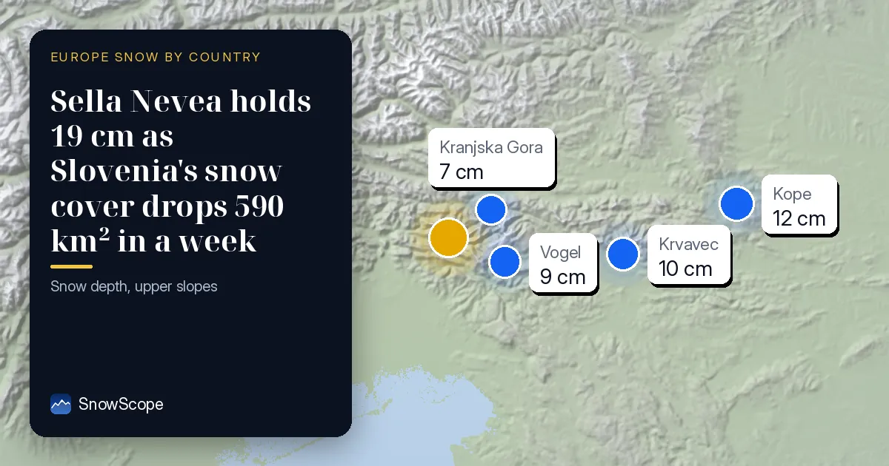

Sella Nevea holds 19 cm as Slovenia's snow cover drops 590 km² in a week
Sella Nevea sits at 2137 m with 19 cm of snow on 20 November, the deepest and most stable site in Slovenia right now. The country has lost 590 km² of snow cover in the past week—a sharp fall from 1190 km² seven days ago—as lower elevations warm and melt.
See the live snow forecast for Sella Nevea in the SnowScope appSnow depth, powder alerts and the 3D map, free.
One week, 590 km² gone
Snow cover across Slovenia has shrunk fast. On 13 November, 1190 km² of the modelled area was white. By 20 November, only 600 km² remained—a loss of 590 km² in seven days. Yesterday alone, 160 km² melted as air temperatures rose. The country now sits at just 8 percent white cover overall.
This kind of retreat is not unusual in November. Early-season snow is thin and sits low; a few warm days erase it quickly. The Julian Alps have fared better than lower ranges because they hold the depth. Sella Nevea, the highest resort at 2137 m, is Slovenia's current leader with 19 cm. The Kamnik-Savinja Alps keep 46 cm from the past 72 hours, though measured depths at resorts there are still modest.
| Day | White area | Most new snow in 3 days | Deepest resort |
|---|---|---|---|
| Monday 16 November | 1,130 km² | 1 cm | Gače |
| Tuesday 17 November | 490 km² | 2 cm | Velika planina |
| Wednesday 18 November | 260 km² | 2 cm | Vogel |
| Thursday 19 November | 760 km² | 30 cm | Sella Nevea |
| Friday 20 November | 600 km² | 29 cm | Sella Nevea |

Where snow still lies
Snow now clings only to high ground. Above 2000 m, the mean depth is 22 cm and 100 percent of the area is covered. Between 1500 and 2000 m, 87 percent is white with a mean of 8 cm. Below 1000 m, there is almost no snow left—the snow line sits at 1500 m.
The Julian Alps are the exception: 54 cm fell there in the past 72 hours, well above the country average of 29 cm. This concentrated snowfall has kept depth and cover high in the range. Sella Nevea's measured 19 cm reflects this advantage, and the resort can expect another 30 cm over the next three days as a fresh system moves in.

What the model sees across heights
Our snow model estimates the following depths by elevation band as of 20 November. From 500 to 1000 m: zero snow and zero cover. From 1000 to 1500 m: zero mean depth, but 7 percent of the area holds patches. From 1500 to 2000 m: 8 cm average with 87 percent cover. Above 2000 m: 22 cm average with full coverage.
These are model estimates for each band and may vary with slope angle, aspect and local wind. Measured station data confirm that the highest resorts hold the most reliable snow. Krvavec, at 1963 m, has 10 cm and is forecast to gain 23 cm in the next three days. Vogel, at 1731 m, has only 9 cm but sits in the path of the incoming system.
Sella Nevea leads; the Julian Alps dominate
Sella Nevea is Slovenia's best site today with 19 cm measured on 20 November and 23 cm that fell in the past 72 hours. The resort sits high enough to have dodged the worst of the melt. It is forecast to gain 30 cm over the next three days—by far the largest increase among Slovenian resorts.
The Julian Alps as a whole received 54 cm of snow in 72 hours, making them the country's snowiest terrain. This range will continue to benefit as the forecast system moves through. Krvavec, in a different range, will gain 23 cm, making it a secondary target. Pohorje, the lowest and warmest range, received only 3 cm in 72 hours and will stay thin.
The next three days: where the new snow falls
Slovenia is forecast to receive up to 18 cm of new snow over the next three days, with 17 cm possible on 22 November alone. This is the first significant snowfall for many lowland areas. The heaviest snow will again favour the highest peaks and the Julian Alps. Sella Nevea will capture 30 cm, Krvavec 23 cm, and Kranjska Gora 17 cm.
Lower resorts will see less benefit. Vogel will gain 14 cm, Kope only 12 cm. After 23 November, the forecast weakens: only 4 cm is expected in the second week (28 November to 4 December), so early December will be quieter. The window for skiing on fresh cover is now through 23 November.
What to watch next
The next seven days will bring up to 35 cm across the country, almost all of it in the first three days. After that, snow production drops sharply. Skiers looking for the best conditions should aim for the Julian Alps and Sella Nevea before 23 November.
Early-season snow is often thin and may not cover all terrain. Rocks and obstacles near the surface are common at these depths. Check the official avalanche bulletin before going off-piste. Use the SnowScope app to track where new snow is building in real time.
Tips for skiers
- Target Sella Nevea and the Julian Alps in the next 72 hours while fresh snow arrives—30 cm is forecast there, far more than elsewhere in Slovenia.
- Stay above 1500 m: below that altitude, snow is patchy and unreliable. All remaining cover sits in higher bands.
- Watch the 22 November forecast closely: 17 cm is expected that day alone, the peak of the incoming system.
- Expect thin cover on many runs, especially off-piste. Early-season snow often sits shallow over rocks. Consult the official avalanche bulletin before leaving marked terrain.
- Plan your visit before 23 November. After that date, snowfall drops to just 4 cm in the following week.
About these numbers
Resort snow depths are the deepest snow on the resort's upper slopes from the SnowScope snow model (about 1 km, run of 20 November); they are estimates for an area, not a measurement at one point. Station values are measurements on the date shown. Forecasts can change. Always read the official avalanche bulletin before going off-piste.
Cite this report
For research, teaching or the press: the numbers and charts are free to reuse under CC BY 4.0 with this citation.
SnowScope (2026), Sella Nevea holds 19 cm as Slovenia's snow cover drops 590 km² in a week, https://snowscope.app/blog/en/2026/11/slovenia-snow-cover-loss-this-week-20-november-2026.html, accessed 2026-11-20
SnowScope (Atlas Labs). (2026, November 20). Sella Nevea holds 19 cm as Slovenia's snow cover drops 590 km² in a week. SnowScope snow reports. https://snowscope.app/blog/en/2026/11/slovenia-snow-cover-loss-this-week-20-november-2026.html
BibTeX
@misc{snowscope2026sloveniasnowcoverlossthi,
author = {{SnowScope (Atlas Labs)}},
title = {Sella Nevea holds 19 cm as Slovenia's snow cover drops 590 km² in a week},
year = {2026},
month = nov,
howpublished = {\url{https://snowscope.app/blog/en/2026/11/slovenia-snow-cover-loss-this-week-20-november-2026.html}},
note = {Published 2026-11-21 12:28 UTC; accessed 2026-11-20}
}· CC BY 4.0 · Methods, data and tools →
Sella Nevea: snow and temperature by height, this winter vs last (tools) →
Follow Sella Nevea
Free: a message when fresh snow is coming, and the forecast every morning.
More snow reports

Only Borovets and Bansko have a trace of snow at the top today, 2 cm each. A week ago Borovets had 11 cm. Day by day, and the one snowy day in the forecast.

Tornik on Zlatibor had up to 39 cm on its upper slopes on 15 November 2026; by Wednesday it had melted. Kopaonik barely turned white. The week day by day and what comes next.

Pick a region, dates, budget and what matters; get every resort ranked with the likely snow at the start, the pass, hotel and food per person, chalets to book, and a game mode.